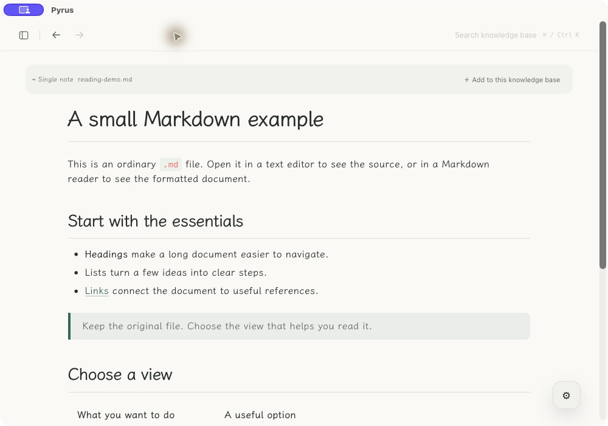
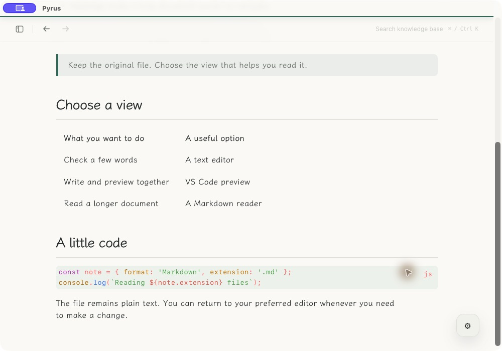

What do you want to do?
- Just read the wordsControl-click → Open With → TextEdit, or press Space for Quick Look.Use TextEdit / Quick Look →
- See headings, tables, and codeOpen the file in a Markdown reader, with the original kept in place.See the reading view →
- Make double-click open the right appChoose a default app for .md files in Finder Get Info.Set the default app →
Already use VS Code? Open the file and press Shift+Command+V. Preview instructions.
Want a reading app, not another editor?
Pyrus is a free, open-source Markdown reader. Install it, then open or drop one file—no account or knowledge base setup required.
## Start with the essentials
- **Headings** make a long document easier to navigate.
- Lists turn a few ideas into clear steps.
Real app screenshot, captured on macOS. View full size.
Download macOS installer (.dmg)v0.11.0 · macOS Apple Silicon (aarch64) · Pyrus_0.11.0_aarch64.dmg
Other installers, platforms & release notes. Prefer no new app? The TextEdit, Quick Look, and VS Code methods below still work.
Why does a .md file look like code?
Markdown is deliberately stored as plain text. Symbols give that text structure: # creates headings, double asterisks create bold text, and backticks mark code. This makes the file durable and portable, but a plain-text app shows the formatting symbols as well as the words.
A Markdown renderer interprets those symbols and presents the same file as a finished page. It does not need to convert or replace the original.
Try the same file in each app
No Markdown file handy? This small example includes headings, a list, a link, a quote, a table, and a code block. Open it with any of the methods below and compare the results.
Download the example .md fileIf your browser displays the text instead, save it as reading-demo.md, not reading-demo.md.txt.
Inspect the longer Markdown source excerpt
# A small Markdown example
This is an ordinary `.md` file. Open it in a text editor to see the source, or in a Markdown reader to see the formatted document.
## Start with the essentials
- **Headings** make a long document easier to navigate.
- Lists turn a few ideas into clear steps.
- [Links](https://www.markdownguide.org/basic-syntax/) connect the document to useful references.
> Keep the original file. Choose the view that helps you read it.Option 1: Use TextEdit to inspect the source
- Control-click the
.mdfile in Finder. - Choose Open With, then select TextEdit.
TextEdit is already on every Mac and is useful for checking the words or correcting something small. It normally treats Markdown as plain text, so formatting symbols remain visible.
Best for: quick inspection and simple edits. Not ideal for: reading documentation or long notes.
Option 2: Try Finder Quick Look
- Select the file in Finder.
- Press the Space bar.
Quick Look is excellent for checking whether you have the right file. The result varies by macOS version and installed extensions: you may see readable text, but not every Markdown element will necessarily be rendered.
Use it when speed matters more than typography, navigation, diagrams, or image handling.
Option 3: Use the VS Code Markdown preview
- Open the file in Visual Studio Code.
- Press Shift+Command+V to open the preview.
- Press Command+K, release the keys, then press V for a side-by-side preview.
This is the best option when you are actively editing Markdown or already working in a code project. You get the source, a rendered preview, extensions, and developer tools in one place.
If reading is the only task, the surrounding editor interface can feel heavier than the document itself.
Option 4: Read it in a dedicated local app
A dedicated reader removes the editing surface and treats Markdown like a document. This is useful for README files, technical documentation, AI-generated notes, saved articles, and any long file you expect to return to.
- Download Pyrus for macOS Apple Silicon (.dmg) from the official GitHub release, then install it.
- Choose Open Markdown file, or drag the file onto the Pyrus window.
- Read it in place. Pyrus does not upload, copy, or move the original file.
Compare the source and the real reading view above, or expand the example below to see how a table and code block look.
See the table and code block from the same file

For longer documents, Pyrus adds a live outline and remembers where you stopped. If the note later becomes important, you can link it into an existing knowledge base while leaving the original in its folder.
How to export Markdown to PDF on Mac
Pyrus 0.10.0 can print the formatted document through the macOS print dialog. Use this when you want to send a readable PDF without uploading your Markdown to an online converter.
- Open your
.mdfile in Pyrus, or try this small Markdown example. - Choose Export → Export PDF / Print…, or press Command+P.
- In the system print dialog, open the PDF menu and choose Save as PDF.
- Check the preview, give the PDF a name, choose its location, and save.
The export uses white paper, even when your reading theme is dark. Check that images and diagrams have finished loading, and review page breaks before saving. The current note is exported; the original Markdown is not replaced.
Apple documents the system dialog in its Save a document as a PDF guide.
Paste the reading view into an email or document
Choose Export → Copy as rich text for an app that accepts formatted text, or Copy Markdown for the original source. Formatting support varies by destination; math is copied as TeX source, so inspect the pasted result before sending it.
If you are comparing several notes, open them in separate reading tabs instead of repeatedly leaving the current file.
Make a Markdown reader the default on macOS
- Select any
.mdfile in Finder. - Press Command+I, or Control-click and choose Get Info.
- Expand Open with and choose your Markdown reader.
- Click Change All… and confirm.
After that, double-clicking a Markdown file opens it in the reader. You can still use Open With whenever you want TextEdit, VS Code, or another editor.
Which method should you use?
| Method | Best for | Rendered view | Stays local |
|---|---|---|---|
| TextEdit | Quick inspection or tiny edits | No | Yes |
| Quick Look | Identifying a file in Finder | Limited / extension-dependent | Yes |
| VS Code | Writing and side-by-side preview | Yes | Yes |
| Dedicated reader | Comfortable reading and returning later | Yes | Yes |
Frequently asked questions
What app opens .md files on a Mac?
TextEdit and code editors open the plain text. To see headings, links, tables, code blocks, and images as a formatted document, use a Markdown-capable editor or dedicated reader.
What is the best way to read or view .md files on Mac?
For a quick plain-text check, use TextEdit or Finder Quick Look. If you already use VS Code, press Shift+Command+V for its built-in preview. To read or view formatted Markdown documents comfortably without opening a full code editor, use a dedicated local Markdown reader such as Pyrus.
Can Safari open a local Markdown file?
Safari can show plain text, but it does not consistently render a local Markdown document as a finished page. Browser extensions or online converters can help, but a local reader is simpler for private files.
Can I preview Markdown with the Space bar?
Quick Look can preview the file, but the level of Markdown rendering depends on macOS and any Quick Look extensions you have installed.
Why do local images disappear?
Images are often referenced using paths relative to the Markdown file. Keep the note and its image folder in their original relative positions, and choose a reader that resolves assets from the source file location.
Will changing the default app modify my file?
No. Changing the default app only changes which application opens the file when you double-click it. The Markdown content and location remain unchanged.
Can I export Markdown to PDF locally on Mac?
Yes. In Pyrus 0.10.0 or later, choose Export → Export PDF / Print, then choose Save as PDF in the macOS print dialog. No online conversion service is needed.
Read the document. Keep the file.
Pyrus is a free, open-source Markdown reader for macOS, Windows, and Linux. It opens one note without setup and leaves every file in the folder you chose.
Download macOS installer (.dmg) — free